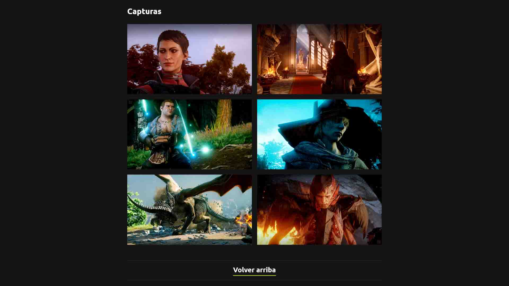
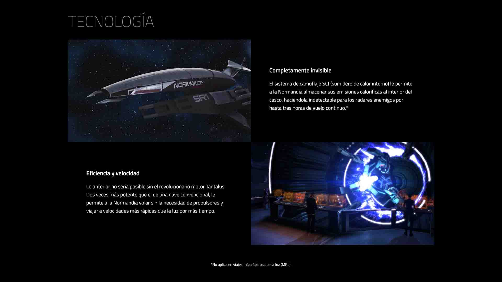
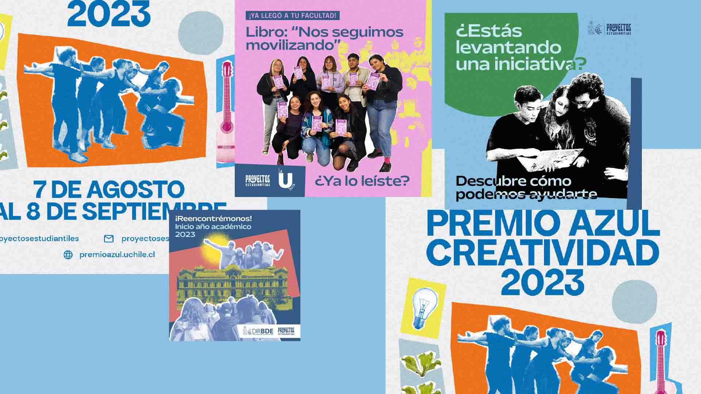

Me interesan el diseño UX/UI, el desarrollo tipográfico y la gamificación. Actualmente, hago gráficas para las redes sociales de @proyectosestudiantilesuch.
En mi tiempo libre, participo de la Organización de Manga y Anime Estudiantil, juego RPGs y soy un intento de jugador competitivo de Guilty Gear Strive.
Prototipo de plataforma digital para la fintech colombiana Juancho te Presta. Trabajo realizado en conjunto con otros estudiantes para el ramo Proyecto VII en 2022. El prototipo interactivo se encuentra disponible aquí.
Prototipo de blog personal. Realizado en HTML y CSS para el ramo Programación web e intrducción a la animación digital en 2021. El sitio se encuentra en GitHub Pages.
Mini fanpage del videojuego Mass Effect. Hecha en HTML y CSS para el ramo Herramientas Computacionales en 2021. Disponible en GitHub Pages.
Gráficas para las redes sociales del programa Proyectos Estudiantiles. Desde mediados de 2022, trabajo en el programa Proyectos Estudiantiles de la Dirección de Bienestar y Desarrollo Estudiantil (